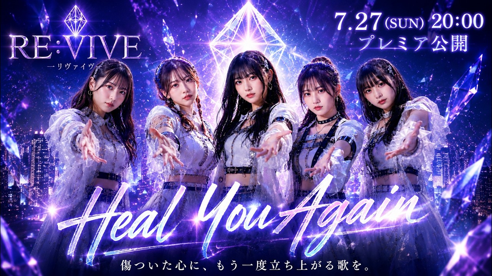

News / Official Release2026-07-27OFFICIAL RELEASERE:VIVE「Heal You Again」公開傷ついた心に、もう一度立ち上がる歌。SUZUKAのオリジナルAIアーティスト、RE:VIVEによる公式リリース情報です。登場するアーティスト・人物は架空です。Heal You Again傷ついた心に寄り添い、もう一度立ち上がる力を届けるRE:VIVEのデビュー作品。公式MVを見る ↗作品ページ ↗Official linksアーティストページ ↗SNS・公式リンク ↗